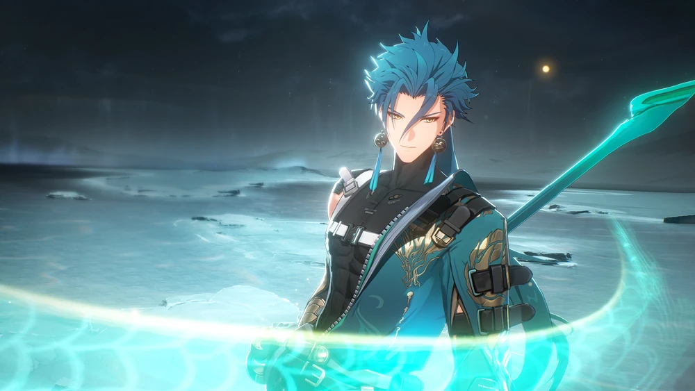
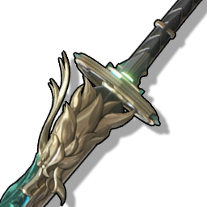
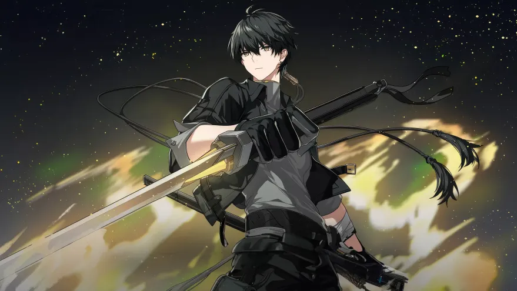
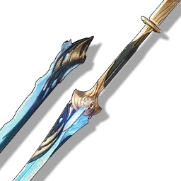
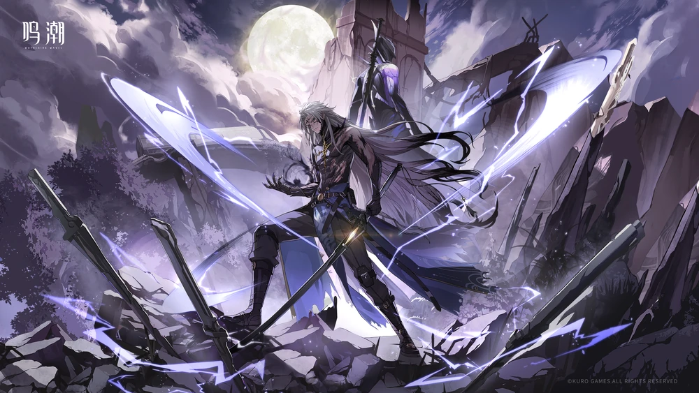
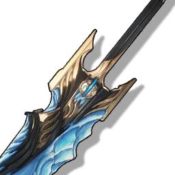

Jiyan

"I have never regretted to brave the long night." -Jiyan
He is the general of the Midnight Rangers selected by the sentinel
of Jinzhou, Jué and is stationed in the same city mentioned above.
Jiyan embraces the strong sense of justice and resolution.
Verdant Summit - Signature Weapon

The ancient mountain stands tall, its peak reaching towards the
sky. A river flows for thousands of years, forming the blade of a
powerful weapon. As it is unsheathed, a powerful dragon's roar
echoes through the heavens and earth, causing the sea to churn.
This awe-inspiring weapon strikes fear in all who witness its
might.
Rover

"Is this the beginning of a new journey? Brimming with novel sounds,
and untold stories..." -Rover
Awakened with an unknown past, Rover embarks on a journey to uncover
the truths. As secrets are unveiled, Rover establishes deeper
connections with the world.
Emerald of Genesis

Pay heed: the frigid blade reveals an icy current that amalgamates
into a whirlpool of thoughts. Use this powerful sequence to crush
your enemies with ease using the Sword.
Calcharo

"They'll make an offer we like. I'll make sure of it." -Calcharo
He is a former exile from the New Federation's Lawless Zone, and is
the leader of the Ghost Hounds, a multinational mercenary group.
Lustrous Razor

Gaze upon this Broadblade, its sharp edges glistening in the
frigid air. As you wield it, you feel the power coursing through
like a frozen river.